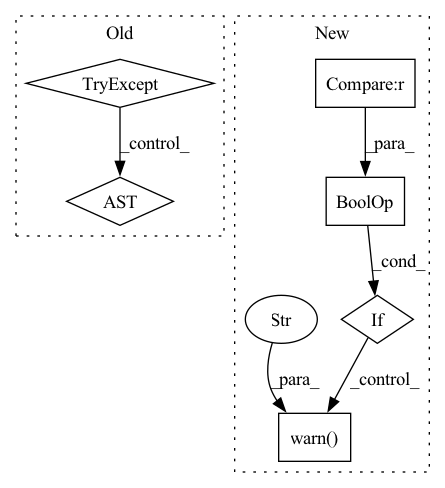

Pattern ID :5351
Before Change
is_tensor, is_prod = _check_compatability(X, func, z0, t)
if adjoint:
try:
adjoint_params = tuple(kwargs["adjoint_params"])
except KeyError:
try:
adjoint_params = tuple(func.parameters())
except AttributeError:After Change
for buffer in X.buffers():
// Compare based on id to avoid PyTorch not playing well with using `in` on tensors.
if buffer.requires_grad and id(buffer) not in _adjoint_params :
warnings.warn("One of the inputs to the control path X requires gradients but is not listed in "
"`options["adjoint_params"]`. This is probably a mistake: it will not receive a gradient "
"when using the adjoint method. Either have the input not require gradients (if that "
"was unintended), or include it (and every other parameter needing gradients) in "
"`adjoint_params`. For example:\n"
"```\n"
"coeffs = ...\n"
"func = ...\n"
"X = NaturalCubicSpline(coeffs)\n"
"adjoint_params = tuple(func.parameters()) + (coeffs,)\n"
"cdeint(X=X, func=func, ..., adjoint_params=adjoint_params)\n"
"```" )
vector_field = _VectorField(X=X, func=func, is_tensor=is_tensor, is_prod=is_prod)
odeint = torchdiffeq.odeint_adjoint if adjoint else torchdiffeq.odeint
out = odeint(func=vector_field, y0=z0, t=t, **kwargs)In pattern: SUPERPATTERN
Frequency: 4
Non-data size: 6
Instances Fragment ID: 19113879
Project Name: patrick-kidger/torchcde
Commit Name: a7b8403a215d7433eb14abe647b39dc098b9933d
Time: 2021-02-06
Author: 33688385+patrick-kidger@users.noreply.github.com
File Name: torchcde/solver.py
M Class Name: AnonimousClass
N Class Name: AnonimousClass
M Method Name: cdeint(5)
N Method Name: cdeint(5)
M Parent Class:
N Parent Class:
M File Name: torchcde/solver.py
N File Name: torchcde/solver.py
M Start Line: 179
M End Line: 200
N Start Line: 180
N End Line: 208
Before Change
if "--no-output" not in sys.argv:
test_name = request.node.name.replace("test_", "")
if test_name == "lstm" and sys.version_info < (3, 7):
try:
verify_output(capsys, f"tests/test_output/{test_name}.out")
except AssertionError:
warnings.warn(
"Verbose output is not determininstic because dictionaries "
"are not necessarily ordered in versions before Python 3.7."After Change
"are not necessarily ordered in versions before Python 3.7."
)
return
if sys.version_info < (3, 8) and test_name == "tmva_net_column_totals" :
warnings.warn(
"sys.getsizeof can return different results on earlier Python versions."
)
return
verify_output(capsys, f"tests/test_output/{test_name}.out")
Fragment ID: 19113877
Project Name: tyleryep/torchinfo
Commit Name: 21e4e9dc841bdbb06655027895c57fa392008eb5
Time: 2021-07-05
Author: tyep@cs.stanford.edu
File Name: conftest.py
M Class Name: AnonimousClass
N Class Name: AnonimousClass
M Method Name: verify_capsys(2)
N Method Name: verify_capsys(2)
M Parent Class:
N Parent Class:
M File Name: conftest.py
N File Name: conftest.py
M Start Line: 28
M End Line: 40
N Start Line: 28
N End Line: 43
Before Change
better = True // whether we find a better model in one trial
if self._ensemble:
self.best_model = {}
try:
from ray.tune.suggest import ConcurrencyLimiter
except ImportError:
from .searcher.suggestion import ConcurrencyLimiter
if self._hpo_method in ("cfo", "grid"):
from flaml import CFO as SearchAlgo
After Change
searcher = search_state.search_alg.searcher
if searcher.is_ls_ever_converged and not self._ever_converged_per_learner[estimator]:
self._ever_converged_per_learner[estimator] = searcher.is_ls_ever_converged
if all(self._ever_converged_per_learner.values()) and \
self._state.time_from_start > self._warn_threshold * self._time_taken_best_iter :
logger.warn("All estimator hyperparameters local search has converged at least once, "
f"and the total search time exceeds {self._warn_threshold} times the time taken "
"to find the best model." )
self._warn_threshold *= 10
else:
logger.info(f"no enough budget for learner {estimator}")
Fragment ID: 19113882
Project Name: microsoft/flaml
Commit Name: 10082b9262a862ef51cf09117bc5d13e43d1ca0d
Time: 2021-08-11
Author: qw2ky@virginia.edu
File Name: flaml/automl.py
M Class Name: AutoML
N Class Name: AutoML
M Method Name: _search(1)
N Method Name: _search(1)
M Parent Class:
N Parent Class:
M File Name: flaml/automl.py
N File Name: flaml/automl.py
M Start Line: 1187
M End Line: 1399
N Start Line: 1203
N End Line: 1454
Before Change
// is_package check currently fails, because pkg_resources.working_set
// is not refreshed automatically (see /). We"re trying to work
// around this here be requiring the package explicitly.
try:
pkg_resources.working_set.require(model_name)
except : // noqa: E722
// Maybe it"s possible to remove this – mostly worried about cross-
// platform and cross-Python copmpatibility here
passAfter Change
can be shortcut, model name or, if --direct flag is set, full model name
with version. For direct downloads, the compatibility check will be skipped.
if not require_package("spacy") and "--no-deps" not in pip_args :
msg.warn(
"Skipping model package dependencies and setting `--no-deps`. "
"You don"t seem to have the spaCy package itself installed "
"(maybe because you"ve built from source?), so installing the "
"model dependencies would cause spaCy to be downloaded, which "
"probably isn"t what you want. If the model package has other "
"dependencies, you"ll have to install them manually."
)
pip_args = pip_args + ("--no-deps",)
dl_tpl = "{m}-{v}/{m}-{v}.tar.gz//egg={m}=={v}"
if direct:
components = model.split("-") Fragment ID: 19113880
Project Name: explosion/spaCy
Commit Name: a84025d70b276df3a84b31b024525c51c04f53cf
Time: 2019-09-16
Author: ines@ines.io
File Name: spacy/cli/download.py
M Class Name: AnonimousClass
N Class Name: AnonimousClass
M Method Name: download(2)
N Method Name: download(2)
M Parent Class:
N Parent Class:
M File Name: spacy/cli/download.py
N File Name: spacy/cli/download.py
M Start Line: 39
M End Line: 82
N Start Line: 31
N End Line: 85